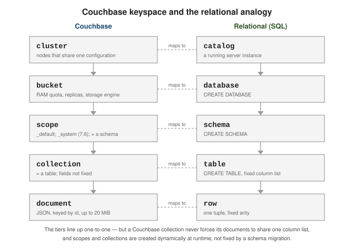

Buckets, scopes & collections
|
This content was generated with the assistance of AI and should be verified against the official documentation before being relied on in production. |
Couchbase groups documents into a three-level keyspace: a bucket contains scopes, and a scope contains collections. A collection is the unit a document actually belongs to, and it plays the role a table plays in a relational database.
The bucket.scope.collection keyspace
Every document is addressed as bucket.scope.collection plus its key. A collection is roughly an RDBMS
table; a scope is roughly a schema — a namespace that groups related collections and can carry its own
role-based access-control grants.

| Couchbase | Relational (SQL) |
|---|---|
bucket |
database / catalog |
scope |
schema |
collection |
table |
document key |
primary key |
fields not fixed by the collection |
column list fixed by DDL |
A new bucket always contains a _default scope holding a _default collection, so code written before
scopes and collections keeps working — documents simply land in _default._default. Couchbase Server 7.6
adds a read-only _system scope that the server uses for its own metadata (for example the Eventing and
Query catalogs); applications do not write to it.
# List the scopes and collections in a bucket. couchbase-cli collection-manage -c localhost:8091 \ -u Administrator -p password \ --bucket travel-sample --list-scopes # The same information is queryable from a system keyspace in SQL++. SELECT `scope`, `name` AS coll FROM system:keyspaces WHERE `bucket` = "travel-sample"; -- `collection` is a reserved word in SQL++, so it cannot be used as an unquoted alias.
Unlike a table, a collection never constrains the fields of the documents in it; structure lives in the application and, optionally, in indexes and query predicates. Data modeling covers how to divide data across scopes and collections, and Scopes and Collections describes the model and its default limits (up to 1000 scopes and 1000 collections per bucket).
Bucket types and settings
Couchbase has three bucket types:
| Type | Persistence & replication | Use |
|---|---|---|
Couchbase |
In memory with asynchronous persistence to disk; 0-3 replicas; supports every service |
The default; operational data of record |
Ephemeral |
In memory only, no disk persistence; optional replicas; full key-value and query API |
Session or transient state where disk I/O is unwanted but replication still matters |
Memcached (legacy) |
In memory only, no replicas, no persistence, plain key-value |
Deprecated — use an Ephemeral bucket instead |
Key per-bucket settings:
-
RAM quota — memory reserved on every Data node for this bucket’s working set and metadata.
-
Replica count — 0 to 3 copies of each vBucket on other nodes.
-
Bucket durability level — a floor applied to every write (
none,majority,majorityAndPersistToActive,persistToMajority); see Concurrency, locking & durability. -
Maximum TTL — an upper bound in seconds on document expiry; a longer per-document TTL is clamped to it.
0means no cap. -
Eviction / ejection policy — for Couchbase buckets, value-only or full ejection; for Ephemeral buckets,
noEviction(writes fail when full) ornruEviction(evict not-recently-used items). -
Flush — when enabled, a single command deletes every document in the bucket; off by default.
couchbase-cli bucket-create -c localhost:8091 -u Administrator -p password \ --bucket orders \ --bucket-type couchbase \ --bucket-ramsize 512 \ --bucket-replica 2 \ --durability-min-level majorityAndPersistToActive \ --max-ttl 2592000 \ --enable-flush 0
The RAM quota is a hard reservation: it must be at least 100 MiB per bucket, it is taken from every Data node, and part of it always holds per-document metadata, so a bucket that only just fits in memory will start ejecting document values under load. Size it against the working set, not the total dataset. The on-disk storage engine (Couchstore or Magma) is also a per-bucket choice, covered in Storage, security & administration. For the full list of settings see Buckets, Memory, and Storage.
Choosing a bucket type
The type is fixed when the bucket is created and cannot be changed afterwards, so it is worth a deliberate choice:
The commands below were run on a 7.6.2 node and show what the server enforces. An Ephemeral bucket is created with the same command as a Couchbase bucket and takes an eviction policy instead of a storage engine:
couchbase-cli bucket-create -c localhost:8091 -u Administrator -p password \ --bucket sessions --bucket-type ephemeral --bucket-ramsize 100 --bucket-replica 0 \ --bucket-eviction-policy nruEviction --max-ttl 3600 # SUCCESS: Bucket created couchbase-cli bucket-create ... --bucket legacy --bucket-type memcached --bucket-ramsize 100 # DEPRECATED: Memcached buckets are deprecated, please use ephemeral buckets instead couchbase-cli bucket-create ... --bucket mag --bucket-type couchbase --storage-backend magma --bucket-ramsize 100 # ERROR: ramQuota - Ram quota for magma must be at least 1024 MiB
The settings the server actually stored are visible through the REST API, which is also what the Web Console reads. For the Ephemeral bucket above:
curl -s -u Administrator:password http://localhost:8091/pools/default/buckets/sessions \
| jq -c '{bucketType, evictionPolicy, maxTTL, replicaNumber, durabilityMinLevel}'
# {"bucketType":"ephemeral","evictionPolicy":"nruEviction","maxTTL":3600,"replicaNumber":0,"durabilityMinLevel":"none"}
An Ephemeral bucket never touches the disk, so a restart of the node loses its content, but it still replicates
to other nodes, takes part in failover and accepts GSI indexes and SQL++ — the difference between it and a
Memcached bucket, which has none of those. Disabling flush (the default) matters in practice: bucket-flush
on a bucket without flush enabled is refused until bucket-edit --enable-flush 1 is run.
Worked example: the shop keyspace
The running example of this section is one bucket, shop, with one application scope, sales, and one collection
per entity. The bucket is created once; scopes and collections are cheap and can be added at any time without
a restart or a rebalance.
couchbase-cli bucket-create -c localhost:8091 -u Administrator -p password \ --bucket shop --bucket-type couchbase --bucket-ramsize 200 --bucket-replica 0 --enable-flush 1 couchbase-cli collection-manage -c localhost:8091 -u Administrator -p password \ --bucket shop --create-scope sales couchbase-cli collection-manage -c localhost:8091 -u Administrator -p password \ --bucket shop --create-collection sales.customers # repeated for products, orders and categories couchbase-cli collection-manage -c localhost:8091 -u Administrator -p password \ --bucket shop --list-collections # Scope sales: # - orders # - products # - customers # Scope _default: # - _default # Scope _system: # - _query # - _mobile
_system really is server-owned: on this bucket it holds the _query and _mobile collections, and it is
reserved for the server’s own use. The same hierarchy is queryable, which is how tools
and scripts discover a bucket’s layout:
SELECT `scope`, `name` AS coll FROM system:keyspaces WHERE `bucket` = "shop" ORDER BY `scope`, `name`;
-- [{"scope":"sales","coll":"customers"},{"scope":"sales","coll":"orders"},{"scope":"sales","coll":"products"}]
SELECT k.* FROM system:keyspaces k WHERE `bucket` = "shop" LIMIT 1;
-- {"bucket":"shop","datastore_id":"http://127.0.0.1:8091","id":"orders","name":"orders",
-- "namespace":"default","namespace_id":"default","path":"default:shop.sales.orders","scope":"sales"}
The path field is the fully qualified name SQL++ uses internally: namespace (default, the only
one on a single cluster), bucket, scope, collection. _default._default does not appear in
system:keyspaces — it is addressed by the bucket name alone.
Scope as the access-control boundary
A scope is where role-based access control becomes useful: a role such as query_select or data_reader can be
granted on bucket:scope or on a single collection. A reporting user confined to shop:sales can read
everything in it and nothing outside, and cannot write even there:
couchbase-cli user-manage -c localhost:8091 -u Administrator -p password --set \
--rbac-username shopreader --rbac-password '<password>' --auth-domain local \
--roles 'query_select[shop:sales],data_reader[shop:sales]'
-- as shopreader
SELECT COUNT(*) AS n FROM shop.sales.customers; -- [{"n": 7}]
SELECT COUNT(*) AS n FROM shop._default._default;
-- User does not have credentials to run SELECT queries on default:shop._default._default.
-- Add role query_select on default:shop._default._default to allow the statement to run.
INSERT INTO shop.sales.customers (KEY, VALUE) VALUES ("x", {});
-- User does not have credentials to run INSERT queries on default:shop.sales.customers.
That is the practical argument for separating entities into scopes and collections instead of tagging documents
in the _default collection: authorization, indexes, TTL and the Search and Eventing services can all be aimed at
a collection, while a type field can only be filtered after the fact. The full role catalogue is in
Storage, security & administration.
Per-collection TTL and the cost of many collections
A collection can carry its own maxTTL, set when it is created (--max-ttl in the CLI, maxTTL in the REST
call and in the SQL++ WITH clause). A TTL-bounded collection is how a session store or an audit trail
purges itself without a cleanup job:
couchbase-cli collection-manage -c localhost:8091 -u Administrator -p password \
--bucket shop --create-collection sales.sessions --max-ttl 100
CREATE COLLECTION shop.sales.sessions WITH {"maxTTL": 3600};
The effect on an individual document, measured on 7.6.2, is shown in
Documents, keys, metadata & expiration. Collections are
not free: every collection is identified on the wire by a numeric ID that prefixes each key (which is why the
usable key length is a few bytes shorter in a named collection, see the key rules), each GSI index is built
per collection, and every scope and collection counts towards the per-bucket limits quoted above. A hundred collections is an ordinary design; a collection per tenant
for hundreds of thousands of tenants is not — use a tenantId in the key and in the indexes for that case, or
scopes if the tenant count is in the hundreds.
Addressing the keyspace: SQL++, SDKs, and DDL
In SQL++ the path is written with backticks around any name that is not a bare identifier — the hyphen in
travel-sample forces them:
SELECT a.name, a.icao FROM `travel-sample`.inventory.airline a WHERE a.country = "France" LIMIT 3; -- For the _default collection, the bucket name alone still works. SELECT COUNT(*) FROM `beer-sample`;
A statement can also be written with unqualified names and a query context that supplies the bucket and
scope (query_context in the REST API, scope.query(...) in the SDKs, the context selector in the Query
Workbench). The two forms below are the same statement:
curl -s -u Administrator:password http://localhost:8093/query/service \
--data-urlencode 'statement=SELECT name FROM airline WHERE country = $1 LIMIT 2' \
--data-urlencode 'query_context=default:`travel-sample`.inventory' \
--data-urlencode 'args=["France"]'
# [{"name":"Air Austral"},{"name":"Airlinair"}]
SELECT name FROM `travel-sample`.inventory.airline WHERE country = "France" LIMIT 2;
In an SDK the three levels are separate calls:
// The Couchbase Java, .NET, Node.js, Python, Go and Scala SDKs all follow this shape.
cluster.bucket("travel-sample")
.scope("inventory")
.collection("airline");
Create scopes and collections with couchbase-cli, or with SQL++ DDL:
# couchbase-cli couchbase-cli collection-manage -c localhost:8091 -u Administrator -p password \ --bucket orders --create-scope sales couchbase-cli collection-manage -c localhost:8091 -u Administrator -p password \ --bucket orders --create-collection sales.invoice --max-ttl 0 -- SQL++ DDL, equivalent CREATE SCOPE `orders`.sales; CREATE COLLECTION `orders`.sales.invoice; -- Drop them again (the _default scope and collection cannot be dropped). DROP COLLECTION `orders`.sales.invoice; DROP SCOPE `orders`.sales;
See Manage Scopes and Collections for the CLI, REST and SDK variants, and CREATE COLLECTION for the DDL form.
Continue with Documents, keys & metadata, or step back to What Couchbase Server is.